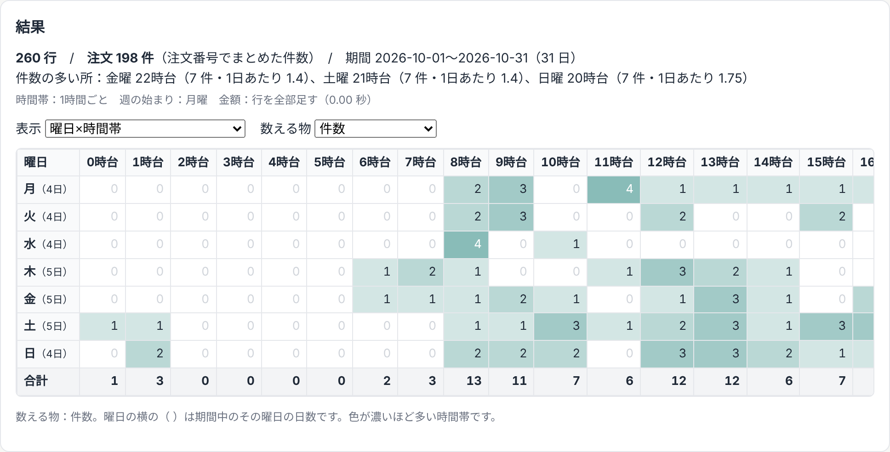

受注の曜日・時間帯の集計
ネットショップや受注の一覧（CSV／Excel）の注文日時から、「何曜日の何時ごろに注文が多いか」を表にするツールです。出荷の人手を増やす曜日、問い合わせの電話番を厚くする時間帯、休業日を決めるときの材料に使えます。
- 曜日×時間帯の表：件数・点数・金額・件数の割合を、1時間ごと・2時間ごと・「9時・12時・18時で区切る」などの時間帯で。多い所ほど色が濃くなります
- 1日あたりの件数：期間中にその曜日が何日あったかで割ります（月曜が5回ある月と4回の月でも比べられます）
- 日ごと・月ごとの件数：注文のない日も 0 件として並べます
ソフトのインストールは不要で、いつものブラウザで動きます。
お試し版はすべての機能を使えて、読み込む表は先頭30行までです。決済が終わると、そのまま製品版の画面に移動します。ブックマークしておけば何度でも使えます。

見本のデータ（架空の注文）で作った例です。実在の店の数字ではありません。
こんなときに
- 出荷やお客さま対応の人手を、どの曜日・時間帯に増やすかを決めたい
- 休業日や、問い合わせの受付時間を決める前に、注文の少ない曜日・時間を確かめたい
- 受注の一覧から曜日と時刻を取り出し、ピボットテーブルを作るのを毎月くり返している
- 海外のサービスから書き出した表で、日時が「2026-11-23T05:05:00Z」（世界標準時）になっていて、日本の時刻に直して数えたい
できること
- 日時の書き方：「2026/11/23 14:05」「2026-11-23 14:05:09」「2026-11-23T14:05:00+09:00」「2026年11月23日 14時05分」「2026/11/23(月) 9:00」「午後2:05」「2:05 PM」「20261123 140500」「令和8年11月23日」、Excel の日付のセル。日付と時刻が別の列の表にも対応します
- 時差：「Z」「+00:00」「UTC」などの付いた日時は、日本時間に直して数えます（そのまま数える設定もあります）
- 商品ごとに1行の表：注文番号の列を選ぶと、同じ注文の行を1件にまとめます。点数は全部の行を足し、金額は「行を全部足す」か「注文の最初の行だけ使う」（注文の合計が各行に入っている表）を選べます
- 時間帯：1・2・3・4・6時間ごと、または「9,12,15,18」のように区切りの時刻を指定。期間（開始日〜終了日）と、週の始まり（月曜・日曜）も選べます
- 確かめやすく：日時が読めない行は行番号つきで一覧にします（集計には入れません）。時刻のない注文は日ごと・月ごとにだけ入れ、曜日×時間帯の表では「時刻なし」の列に出します。件数の多い曜日・時間帯の上位も表示します
- 印刷と保存：曜日×時間帯（件数・1日あたり・点数・金額）を A4 横で、日ごと・月ごとを A4 縦で印刷。Excel ファイル（.xlsx）には各表と「注文ごと」の表（日付・曜日・時刻・時間帯つき。ピボットテーブルで別の切り口に使えます）が入ります。CSV でも保存できます
- CSV（UTF-8・Shift_JIS）と Excel ファイル（.xlsx）を読めます。列は見出し（「注文日時」「受注日」「時刻」「注文番号」「伝票番号」「数量」「金額」「Created at」など）から自動で選び、違っていたら画面で選び直せます。Excel の表をコピーして貼り付けても使えます
注文の一覧でなくても、日時の列がある記録（問い合わせ・電話の受付記録、来店の記録など）なら、同じように曜日×時間帯の件数を出せます。
できないこと（購入前にご確認ください）
- ネットショップ・受注ソフトとはつながりません。受注の一覧を CSV か Excel で書き出して読み込んでください
- 「11/23/2026」のような月/日/年の順の日付は読みません（年が先頭の形に直してください）
- 祝日は曜日どおりに数えます（祝日を分けて数える機能はありません）
- これから先の注文の数を予測したり、人員の配置を決めたりはしません。過去の注文を数えて表にするだけです
- グラフの画像は作りません（色の濃さで多い所を示した表です）。グラフにしたいときは、保存した Excel ファイルからお作りください
- スマートフォンでは操作しにくいため、パソコンでお使いください
Excel だけで集計するなら
A 列に注文日時（Excel の日付のセル）があれば、B 列に曜日の番号、C 列に時（0〜23）を出します。
=WEEKDAY(A2,2)（月曜が 1、日曜が 7） =HOUR(A2)
日本語の Excel なら =TEXT(A2,"aaa") で「月」「火」の形にもできます。曜日×時間帯の件数は、表の縦に曜日の番号、横に時を並べて
=COUNTIFS($B:$B,1,$C:$C,14)（月曜の14時台の件数）
のように数えるか、B・C 列を使ってピボットテーブルを作ります。
このツールが向いているのは、商品ごとに1行の表を注文ごとに1件にまとめたい、日時が文字（「2026-11-23T05:05:00Z」「午後2:05」など）で入っていて Excel が日付と認めない、1日あたりの件数や、注文のない日を含めた日ごとの表も一緒に欲しい、毎月同じ表を作る、といったときです。
よくある質問
| データはどこかに送られますか？ | 送られません。読み込み・集計・印刷・保存はすべてお使いのブラウザの中で行います。時間帯などの設定だけをブラウザに保存し、表の中身は保存しません。 |
|---|---|
| キャンセルされた注文は？ | 表にある行はすべて数えます。キャンセル分を除きたいときは、書き出す前か Excel で、その行を消してから読み込んでください。 |
| 「1日あたり」は、どう計算していますか？ | その曜日の件数を、期間中のその曜日の日数で割っています。期間を指定しないときは、データの最初の注文の日〜最後の注文の日を期間にします。 |
| 何行まで使えますか？ | 製品版は行数の制限はありません（10万行を1秒以内に集計できることを確かめています）。画面の注文ごとの一覧は500件まで表示し、全部は保存に入ります。 |
安心してお使いいただくために
- 表はお使いのブラウザの中だけで処理し、サーバーには送信しません
- 動作環境：最新版の Chrome・Safari・Edge・Firefox（パソコン）
- 説明どおりに動かない場合は、ご購入から7日以内にご連絡いただければ返金します
品ごとの数を棚の順に並べるなら ピッキングリストと仕分け表、営業日を数えるなら 営業日の計算 もあります。